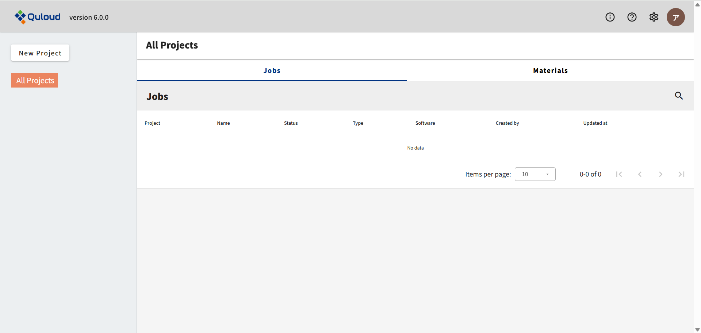
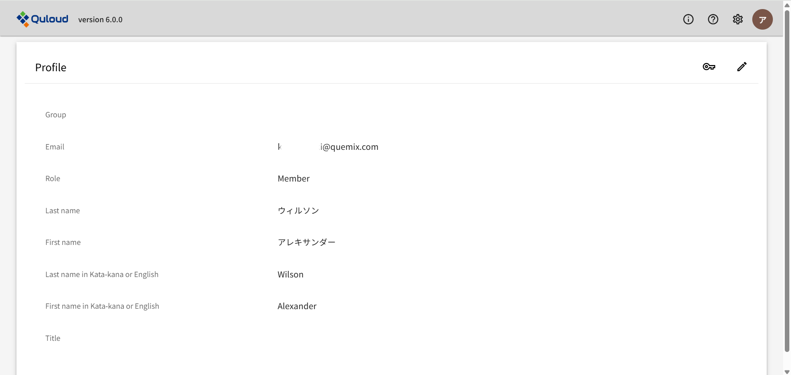
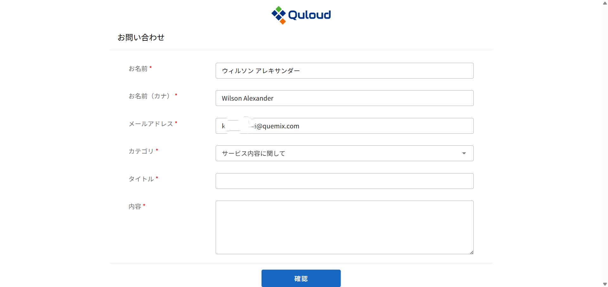

11. ヘッダーメニュー（各種管理）
下図のように、Quloud の画面右上には常時４つのアイコンが表示されており、それぞれ
「ｉ」： お知らせ
「？」： このドキュメント
歯車： メンバー一覧、招待、計算ポイント＆ストレージ
ユーザー： ユーザー情報、お問い合わせ、サインアウト
という機能に対応しています。
11.1. グループ管理機能
ヘッダー部の歯車のアイコンをクリックし、「Usage Status」をクリックすると、下図のような画面が表示されます。 この画面では、現在の（グループ全体の）保有計算ポイントと、ポイント消費の履歴を確認することができます。

11.2. グループ管理
歯車のアイコンをクリックすると、
グループメンバー一覧（Group Users）
グループへの招待（Invitation To Group）
という機能が選択できます。それぞれの機能を以下に説明します。
グループメンバーの一覧画面を示します。「Show」ボタンで各メンバーの詳細情報を確認できます。

また管理ユーザーは詳細情報画面からメンバーをグループから削除することも可能です。 グループからメンバーを外す際に、そのメンバーに属している Job 等を他のメンバーに引き継ぐか、 あるいは Quloud 上から完全に削除するかを選ぶ必要があります。
管理ユーザーは新たなユーザーをグループのメンバーとして招待することができます。 下図の「招待」を押すと、追加したいメンバーのメールアドレスを登録することができます。 登録後「承認ボタン」を押したタイミングで、実際に招待メールが登録したアドレスに送付されます。

11.3. ユーザー管理
ヘッダー部のユーザーのアイコンをクリックし、「Profile」をクリックすると、下図のような画面が表示されます。
ここで、ユーザー情報の確認や編集、パスワードの変更が行えます。
右の鉛筆のマークをクリックすると、ユーザー情報の編集画面に移ります。

情報を編集し、「Submit」をクリックすると、変更した内容が反映されます。
また、右の鍵のマークをクリックすると、パスワード変更画面に移ります。

現在のパスワードと、新しいパスワード（２か所）を入力し、「Submit」をクリックすると、パスワード変更が反映されます。
11.4. お問い合わせ
ヘッダー部のユーザーのアイコンをクリックし、「Inquiry」をクリックすると、下図のような画面が表示されます。
お問い合わせのカテゴリを選択し、タイトル・内容を記入後、「確認」ボタンを押すと、お問い合わせ内容の確認画面に移ります。
内容を確認後、「送信」ボタンを押すと、お問い合わせ完了画面が表示され、入力したメールアドレスに確認メールが送信されます。